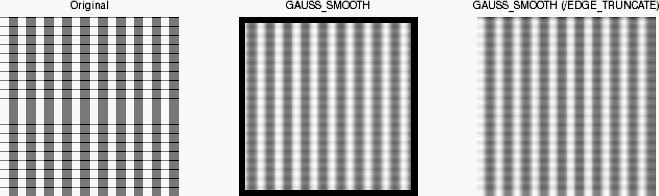

The GAUSS_SMOOTH function smoothes using a Gaussian kernel. Also known as a Gaussian blur, it is typically used to reduce noise and detail in an image.
Result = GAUSS_SMOOTH ( Data [, Sigma ] [, / EDGE_MIRROR | / EDGE_TRUNCATE | / EDGE_WRAP | / EDGE_ZERO ] [, KERNEL = value ] [, / NAN [, MISSING = value ]] [, WIDTH = value ])
Returns an array of smoothed data of the same size and type as the input data.
The input data. The data must be a 1- or 2-dimensional array.
The standard deviation value to be used in calculating the Gaussian kernel. Sigma can either be a scalar or a two-element vector. If Sigma is a scalar, the same sigma value is applied for each dimension that has length greater than 1 (dimensions of length 1 are skipped). If Sigma is a vector, each element of Sigma is used to specify the sigma value for each dimension of Data . Unless the WIDTH keyword is set, the width of the kernel is determined by Sigma such that the kernel contains approximately three standard deviations in each dimension. If Sigma is not supplied, a default value of 1.0 is used.
Set this keyword to compute the values of elements at the edge of Data by mirroring the subscripts of Data at the edge. If none of the EDGE_* keywords are set, the values of Result will be set to zero where the kernel extends beyond the edge.
Set this keyword to compute the values of elements at the edge of Data by repeating the subscripts of Data at the edge. If none of the EDGE_* keywords are set, the values of Result will be set to zero where the kernel extends beyond the edge.
Set this keyword to compute the values of elements at the edge of Data by wrapping the subscripts of Data at the edge. If none of the EDGE_* keywords are set, the values of Result will be set to zero where the kernel extends beyond the edge.
Set this keyword to compute the values of elements at the edge of Data by zeroing the subscripts of Data at the edge. If none of the EDGE_* keywords are set, the values of Result will be set to zero where the kernel extends beyond the edge.
If this keyword is set to a named variable, the Gaussian kernel used will be returned. By calling CONVOL with this kernel and by using the sum of the kernel as the scaling factor, you can obtain an equivalent result to calling GAUSS_SMOOTH.
Set this keyword to the numeric value to return for elements that contain no valid points within the kernel. The default value is 0 for byte or integer input, and NaN for floating point input. This keyword is used only if the NAN keyword is set.
Set this keyword to check for occurrences of the IEEE floating point values NaN or Infinity in the input data. Elements with the value NaN or Infinity are treated as missing data. Missing data are ignored when computing neighboring elements. In Result , missing elements are replaced by the calculation of all other valid points within the kernel. If all points within the kernel are missing, the result at that point is given by the MISSING keyword.
The width of the smoothing window. This value can be used to override the value calculated from the Sigma . Width can either be a scalar or a two-element vector. If Width is a scalar, the same width is applied for each dimension that has length greater than 1 (dimensions of length 1 are skipped). If Width is a vector, each element of Width is used to specify the smoothing width for each dimension of Data . Values for Width must be smaller than the corresponding Data dimension. If a Width value is even, Width +1 will be used instead.
Note: A Width value of 0 or 1 implies no smoothing. However, if the NAN keyword is set, any NaN values within Data will be treated as missing data and will be replaced.
Tip: For a multi-dimensional array, set widths to 1 within the Width vector for dimensions that you don't want smoothed.
; Create test grid
x = 200 & y = 200
img = FLTARR(x,y)
index = LINDGEN(LONG(x)*LONG(y))
img[WHERE(index MOD 20 LT 9)] += 125
img[WHERE(index/y MOD 10 LT 9)] += 125
; Display image
im1 = IMAGE(img, LAYOUT=[3,1,1], MIN_VALUE=0)
; Smooth image and display
img2 = GAUSS_SMOOTH(img ,2)
im2 = IMAGE(img2, /CURRENT, LAYOUT=[3,1,2], MIN_VALUE=0)
; Smooth image using an edge keyword and display
img3 = GAUSS_SMOOTH(IMG, 2, /EDGE_TRUNCATE)
im3 = IMAGE(img3, /CURRENT, LAYOUT=[3,1,3], MIN_VALUE=0)

|
8.1 |
Introduced |